AD ConnectorのVPCピアリング・SG設定・作成
仕様
構成・動作
| 構成要素 | 動作・運用上の扱い |
|---|---|
| VPCピアリング | VPC002とVPC003を接続します。接続の承諾後、双方の対象サブネットに適用されるルートテーブルへ経路を追加します。 |
| AD Connector | 既存ADへの認証要求を中継します。ディレクトリデータは接続先ADで管理します。 |
| AD Connectorの配置 | 異なる2つのアベイラビリティーゾーンに配置され、各インスタンスにENIが作成されます。障害時は同じAZ・同じIPアドレスで自動的に置き換えられます。 |
AD Connectorで作成されるもの／VPCピアリング接続のルートテーブル更新
管理範囲
| 対象 | 本手順での扱い |
|---|---|
| Managed ADのDC用SG | VPC003からの通信許可を追加します。Directory IDとVPCを確認して選択します。 |
| 管理用EC2のSG | 管理用EC2の通信に使用します。本手順のDC用SG変更とは対象が異なります。 |
| AD ConnectorのSG | AD Connector作成後に関連付けとルールを確認します。 |
| サービスアカウント・OU | サービスアカウント作成・権限委任・運用手順で準備したアカウントを使用します。 |
制約事項
- VPCピアリングの接続先VPCどうしでCIDRが重複していないことを確認します。
- AD Connectorの接続には、両配置サブネットから接続先DCへのTCP/UDP 53（DNS）、88（Kerberos）、389（LDAP）が必要です。WorkSpacesのドメイン参加やGPO参照には、追加の通信要件を確認します。
- 本手順の画像では、DC用SGにVPC003のCIDRから「すべてのトラフィック」を許可しています。適用先の設計で許可するプロトコル・ポート・送信元を確認します。
⚠️ 注意：許可する送信元と通信範囲を確認する
本手順では192.168.226.0/23からの全プロトコル・全ポートを許可します。必要ポートに限定する環境では、その設計値を使用します。既存ルールを保持し、追加対象の送信元CIDRと通信範囲を確認して保存します。
⚠️ 注意：Directory ServiceのENIを手動削除しない
AWSが作成したENIは、VPCとディレクトリ間の通信に使用します。利用終了時は、依存サービスを解除した後にDirectory Serviceからディレクトリを削除します。
構築作業
1. 接続先Managed ADと変更対象SGを確認する
- AWS Directory Serviceコンソールで対象のAWS Managed Microsoft ADを開きます。
- 「ネットワークとセキュリティ」を開き、DNS IPv4アドレス、VPCおよびセキュリティグループを確認します。
- VPCコンソールでSGを開き、VPCが
ad-vpc-002になっていることを確認します。 - SG名が通常「Managed ADのDirectory ID +
_controllers」形式になっていることを確認します。 - 変更前のインバウンドルールをCSVまたは画面キャプチャで保存します。
⚠️ 注意：Managed AD用SGとAD Connector用SGを取り違えない
AD Connector作成後にも「AD ConnectorのDirectory ID + _controllers」形式の別SGが自動作成されます。名称が似ているため、Directory IDとVPCを照合してから操作します。
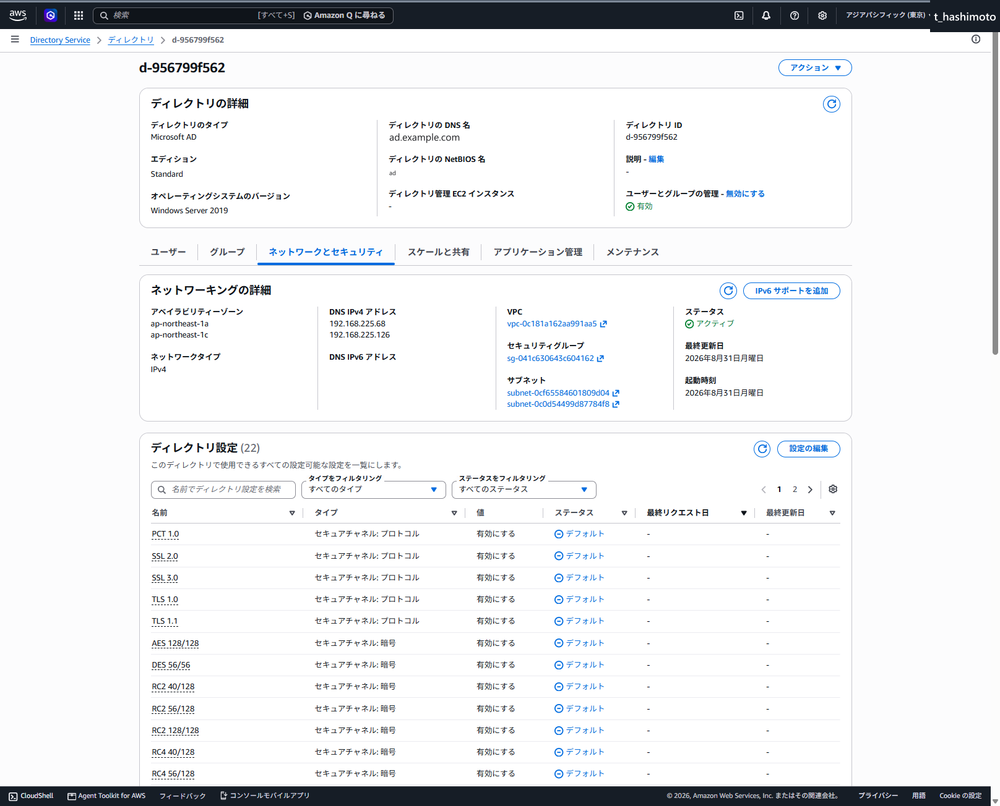
図ではManaged ADのDirectory IDがd-956799f562、DNS IPが192.168.225.68と192.168.225.126です。
2. VPCピアリング接続を作成・承諾する
今回の設定値は、Managed AD側がVPC002（192.168.225.0/24）、AD Connector／WorkSpaces側がVPC003（192.168.226.0/23）です。作業時は、画面表示のVPC IDとCIDRを構成資料と照合してから操作します。
- VPCコンソールで「ピアリング接続」を開き、「ピアリング接続を作成」を選択します。
- 名前を入力します。今回の名称は
002-003-peeringです。 - リクエスタVPCにManaged AD側のVPC002を選択します。
- アカウントは「自分のアカウント」、リージョンは「このリージョン」を選択し、アクセプタVPCにVPC003を選択します。
- 両VPCのCIDRが重複していないことを再確認し、ピアリング接続を作成します。
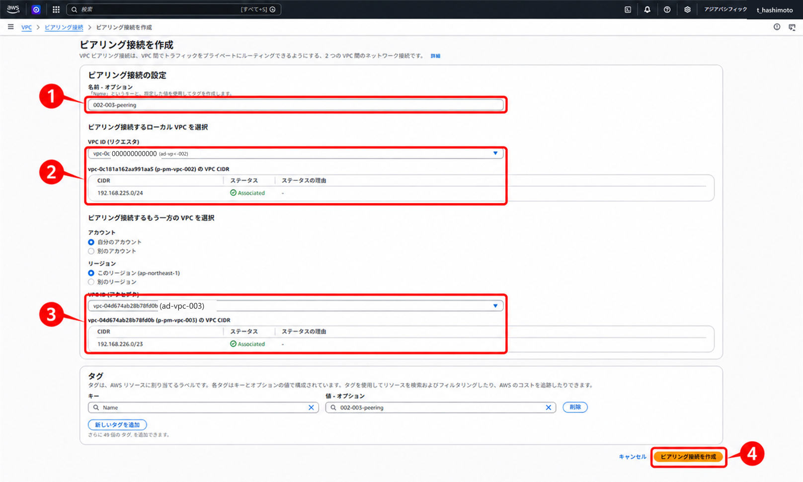
- 作成したピアリング接続を選択し、「アクション」からリクエストを承諾します。
- ステータスが
アクティブになったことを確認します。保留中の承諾のままルート設定へ進みません。
ℹ️ 情報：画像ごとのピアリング接続名の表示
図1の入力名は002-003-peering、図3・6の候補表示はad-vpc-002-003-peerです。対象は名前だけで判断せず、作成・承諾した接続のIDと両側のVPCを照合します。図3～7のルート設定では、同じピアリング接続IDが選択されています。
3. Managed AD側（VPC002）の戻りルートを追加する
- VPCコンソールで「ルートテーブル」を開きます。
- Managed ADを配置した2つのサブネットそれぞれについて、「サブネットの関連付け」から関連ルートテーブルを確認します。2サブネットが異なるルートテーブルを使用している場合は、両方を変更対象にします。今回の画像は
ad-pri-rtb-002を確認したときの画面です。 - 対象となるすべてのルートテーブルについて、VPC、関連付くサブネットおよび変更前ルートを確認します。
- 「ルート」－「ルートを編集」－「ルートを追加」を選択します。
- 送信先にAD Connector側VPCのCIDR
192.168.226.0/23を入力します。 - ターゲット種別で「ピアリング接続」を選択し、前項で作成したVPCピアリング接続IDを選択します。
- 「プレビュー」を選択し、送信先CIDRとピアリング接続IDを照合します。
- 「変更を保存」を選択します。
- 手順2で特定したすべてのルートテーブルに対して手順4～8を繰り返します。保存後の各ルート一覧で、対象ルートの状態が
アクティブになっていることを確認します。
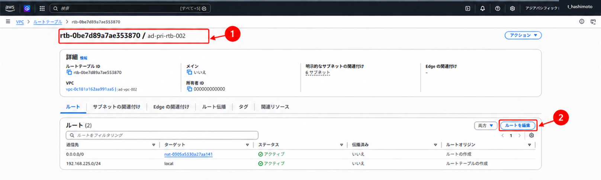
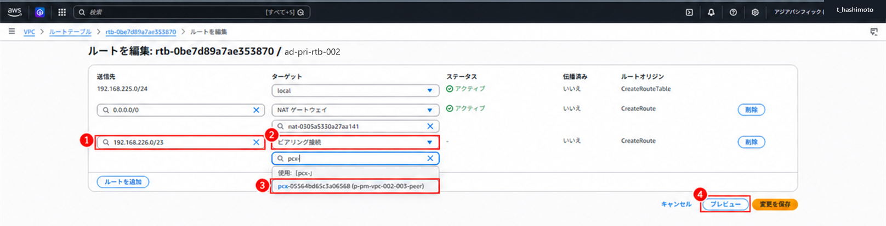
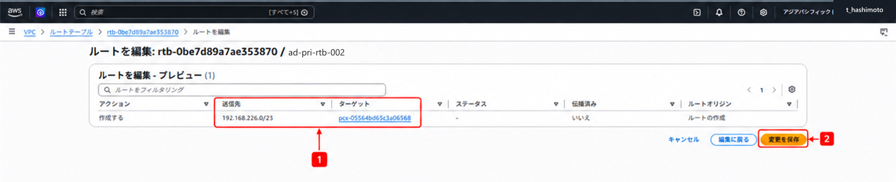
4. AD Connector側（VPC003）の往路ルートを追加する
AD Connector用の2つのサブネットそれぞれについて、「サブネットの関連付け」から関連ルートテーブルを確認します。2サブネットが異なるルートテーブルを使用している場合は、両方を変更対象にします。今回の画像は
ad-vpc-003-pri-rtb-002を確認したときの画面です。 WorkSpaces用サブネットが別のルートテーブルを使用する場合は、そのルートテーブルにもManaged ADへの経路を設定します。対象となるすべてのルートテーブルについて、VPC、関連付くサブネットおよび変更前ルートを確認します。
「ルート」－「ルートを編集」－「ルートを追加」を選択します。
送信先にManaged AD側VPCのCIDR
192.168.225.0/24を入力します。ターゲット種別で「ピアリング接続」を選択し、作成したVPCピアリング接続IDを選択します。
「プレビュー」を選択し、送信先CIDRとピアリング接続IDを照合します。
「変更を保存」を選択します。
手順1で特定したすべてのルートテーブルに対して手順3～7を繰り返します。保存後の各ルート一覧で、対象ルートの状態が
アクティブになっていることを確認します。
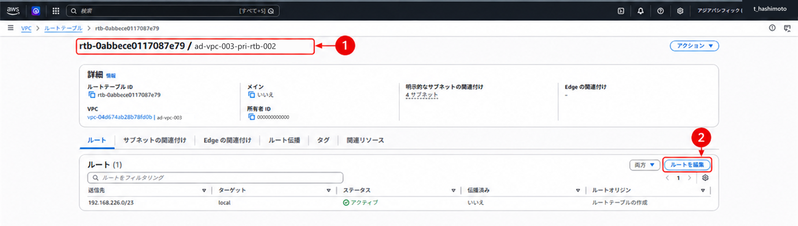
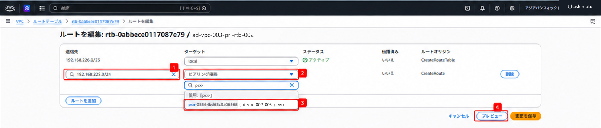
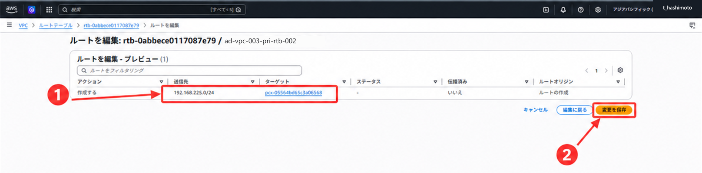
5. Managed ADのDC用SGへVPC003の通信許可を追加する
- VPCコンソールで「セキュリティグループ」を開きます。
- 手順1で特定したManaged ADのDC用SGを選択します。
- 「インバウンドルール」を開きます。
- 既存ルールを削除・置換せず、変更前の件数と内容を確認します。
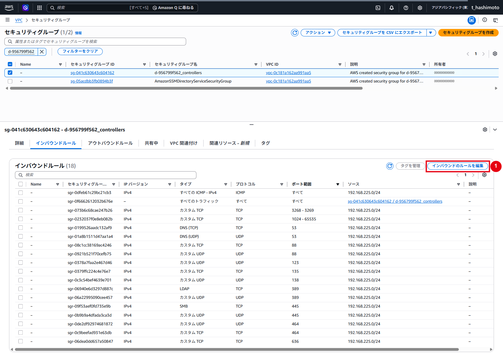
ルールを追加する
- 「インバウンドのルールを編集」を選択します。
- 「ルールを追加」を選択します。
- 顧客環境の承認済み設計に従い、次を入力します。
| 項目 | 設定値 |
|---|---|
| タイプ | すべてのトラフィック |
| プロトコル | すべて |
| ポート範囲 | すべて |
| ソース | 192.168.226.0/23 |
| 説明 | ad-vpc-003 |

- 送信元が対象VPCのCIDRと完全一致し、
0.0.0.0/0や別環境のCIDRでないことをダブルチェックします。 - 追加内容のプレビュー画面へ進み、図9の追加行を確認して「確認」を選択します。
- 成功メッセージと、既存件数から1件増えたことを確認します。図8・10では18件から19件へ増えています。
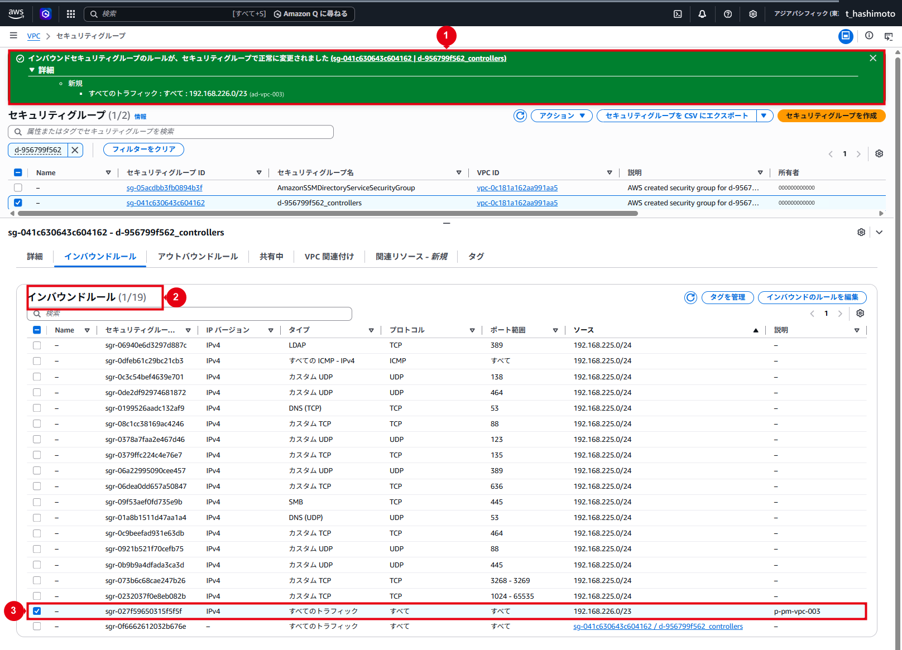
変更後の確認
- 既存のAWS管理ルールが残っている
- 接続元VPCごとに承認済みの1ルールだけが追加されている
- 説明欄から対象VPCと変更目的を識別できる
- 意図しない送信元または重複ルールがない
6. SG変更後に経路・名前解決・通信を確認する
- ピアリング接続が「アクティブ」で、両方向のルートが保存されていることを確認します。
- DC用SGの追加ルールと、双方のネットワークACLが必要な通信・戻り通信を許可していることを確認します。
- 各AD Connector用サブネットの通信経路から、2台の接続先DNS／DCへ次のコマンドを実行します。DNS IPは作業時点のManaged ADの表示値と照合します。
$dnsServers = @('192.168.225.68', '192.168.225.126')
foreach ($dnsServer in $dnsServers) {
Resolve-DnsName -Type SRV '_ldap._tcp.ad.example.com' -Server $dnsServer
Resolve-DnsName -Type SRV '_kerberos._tcp.ad.example.com' -Server $dnsServer
Test-NetConnection -ComputerName $dnsServer -Port 53
Test-NetConnection -ComputerName $dnsServer -Port 88
Test-NetConnection -ComputerName $dnsServer -Port 389
}- 両DNSからLDAP・KerberosのSRVレコードを取得でき、共通するDCが含まれることを確認します。各TCPテストで
TcpTestSucceeded : Trueを確認します。 - UDP 53・88・389についても、SG、ネットワークACLおよび必要に応じた通信テスト・フローログで確認します。
Test-NetConnectionのポート指定はTCPを確認します。
ℹ️ 情報：通信確認を行う場所
Managed ADと同じVPC内の管理用EC2では、VPCピアリングを通る経路を確認できません。AD Connector用の両サブネットから、2台のDNS／DCへの経路をそれぞれ確認します。
ℹ️ 情報：ピアリングのDNS解決オプション
本手順ではManaged ADのDNS IPを直接指定します。ピアリングのDNS解決オプションは、ピアリング先EC2の公開DNSホスト名をプライベートIPへ解決する用途など、別途必要な設計に従って設定します。
7. ディレクトリタイプでAD Connectorを選択する
- AWS Directory Serviceコンソールを開きます。
- 「ディレクトリ」から「ディレクトリのセットアップ」を選択します。
- ディレクトリタイプで「AD Connector」を選択し、「次へ」を選択します。
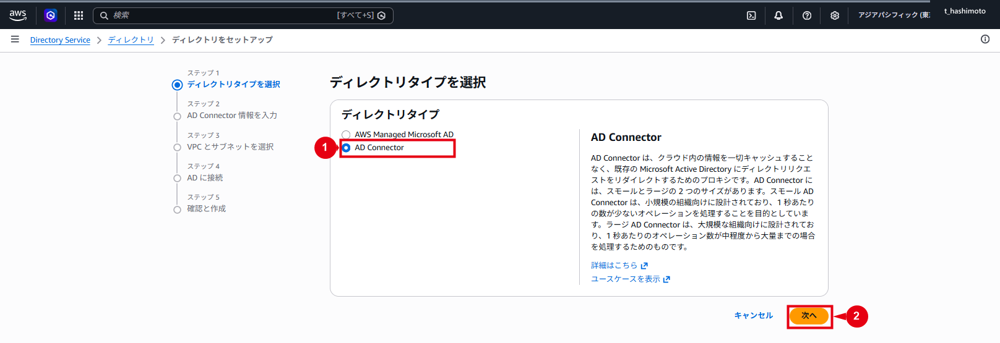
8. AD Connectorのサイズを選択する
- 「ディレクトリサイズ」で「Small」を選択します。
- ディレクトリの説明は未入力とします。
- 「次へ」を選択します。
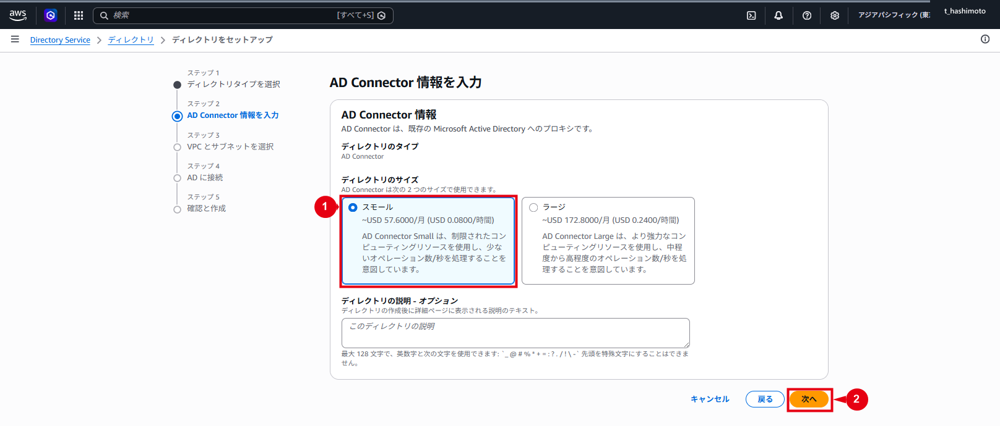
9. AD ConnectorのVPCと2サブネットを選択する
- 対象VPCを選択します。VPC003の場合は
ad-vpc-003を選択します。 - ネットワークタイプで「IPv4のみ」を選択します。
- 「事前に準備する情報」に記載したAD Connector用サブネットを、異なる2つのアベイラビリティーゾーンから選択します。
- WorkSpaces用の
003-003a/cサブネットと取り違えていないことを確認します。 - 「次へ」を選択します。
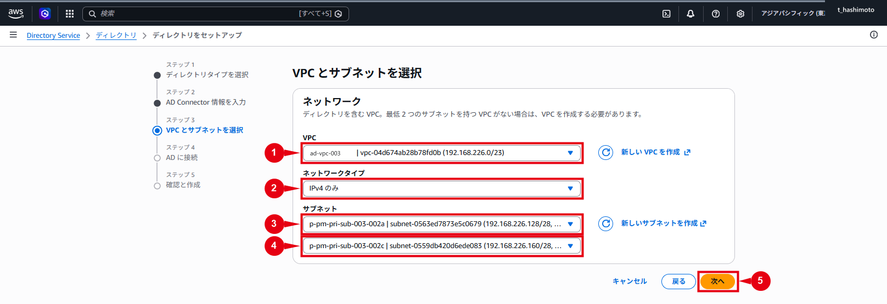
10. Active Directory情報を入力する
次を入力します。
| 項目 | 設定値 |
|---|---|
| ディレクトリのDNS名 | ad.example.com |
| ディレクトリのNetBIOS名 | ad |
| DNS IPアドレス1 | 192.168.225.68 |
| DNS IPアドレス2 | 192.168.225.126 |
| サービスアカウントのユーザー名 | ADConnectorService |
| サービスアカウントのパスワード | 承認済みの保管先から入力 |
- DNS名に
ad.example.comを入力します。 - NetBIOS名に
adを入力します。この欄は任意です。 - DNS IPアドレスに
192.168.225.68と192.168.225.126を入力します。 - サービスアカウントのユーザー名に
ADConnectorServiceを入力します。 - パスワードと確認用パスワードへ、準備した同じ値を入力します。
- 「次へ」を選択します。
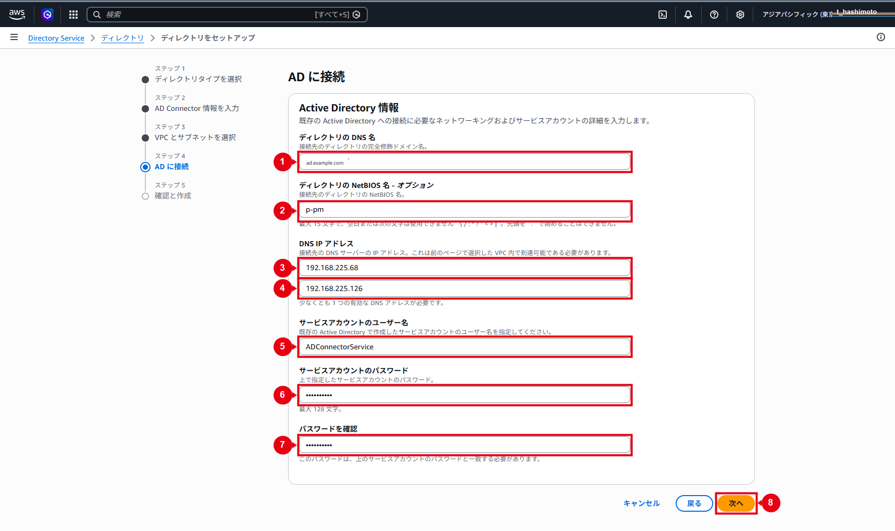
11. 設定内容を確認してAD Connectorを作成する
- ディレクトリタイプ、サイズ、VPC、サブネット、DNSドメイン、NetBIOS名およびDNS IPを確認します。
- サービスアカウント名が個人ユーザーや管理者アカウントでないことを確認します。
- パスワードが画面や証跡に表示されていないことを確認します。
- 「ディレクトリの作成」を選択します。
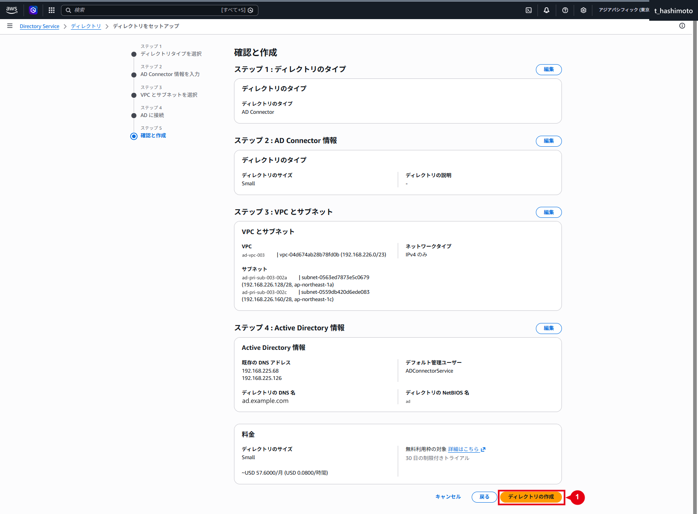
12. AD Connectorの作成状態を確認する
- 一覧に対象AD Connectorが表示され、ステータスが「作成中」になっていることを確認します。
- 画面を適宜更新し、ステータスが「アクティブ」になるまで待ちます。
- 「アクティブ」にならない場合は、SG、ルート、NACL、DNS、SRVレコードおよびサービスアカウント状態を確認します。
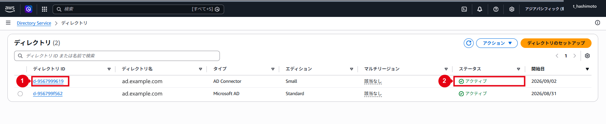
- 詳細を開き、タイプ、サイズ、接続先ドメインおよび接続アカウントを確認します。
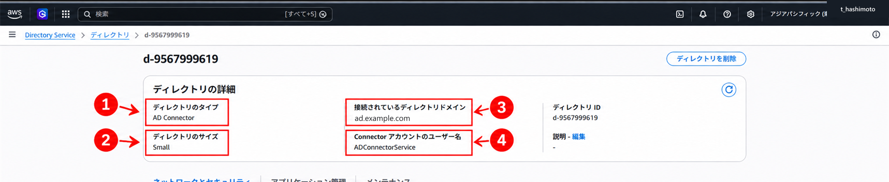
- 「ネットワークとセキュリティ」まで画面を展開し、VPC、2サブネットおよびAD Connector DNS IP（AWS割当）を確認します。
13. AD Connectorに関連付くSGを確認する
- AD Connectorの詳細から関連SGを確認します。
- VPCコンソールでSGを開きます。
- SGがAD Connectorを配置したVPCに作成されていることを確認します。
- SG名が「AD ConnectorのDirectory ID +
_controllers」形式になっていることを確認します。 - Managed AD側のDC用SGとは異なるSGを使用していることを、Directory ID、VPC IDおよびSG IDで確認します。
- 自己参照インバウンドルールとアウトバウンドルールを確認します。AWSが自動作成したルールは保持します。
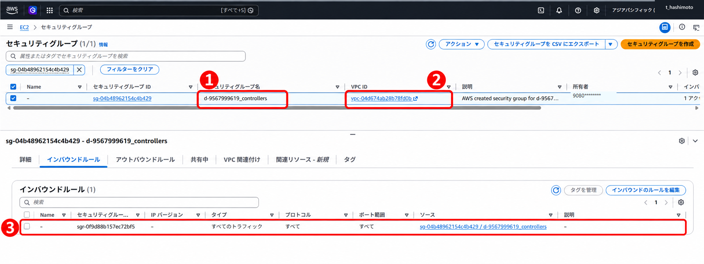
運用作業
1. 接続できない場合の状態を確認する
❌ エラー：AD Connectorの作成・接続が失敗した場合
Directory Serviceに表示された状態とエラーメッセージを確認し、次の順序で調査します。原因を解消し、既存の作成状態を確認してから再実行します。
- 接続先DNS IPを、AD Connector自身のIPと取り違えていないことを確認します。
- VPCピアリングが「アクティブ」になっていることを確認します。
- 両VPCのルートテーブルに往復経路があることを確認します。
- DC用SGに正しい接続元CIDRがあることを確認します。
- ネットワークACLでDNS、Kerberos、LDAPおよび戻り通信が拒否されていないことを確認します。
_ldap._tcpと_kerberos._tcpのSRVレコードを2台のDNSから取得できることを確認します。- サービスアカウントが有効で、ロックや期限切れがないことを確認します。
- 「次回ログオン時にパスワード変更」が無効になっていることを確認します。
Connectorsグループ所属と対象OUへの委任が残っていることを確認します。- WorkSpaces利用時の読み取り・書き込み権限があることを確認します。
2. サービスアカウントのパスワードを変更する
サービスアカウントのパスワードが期限切れ、ロック、無効、またはAD Connector登録値と不一致になると、ユーザー検索やドメイン参加が失敗する可能性があります。
PasswordNeverExpires=Trueは、アカウント単位でパスワードを無期限にする設定です。適用されるPSOはGet-ADUserResultantPasswordPolicyで別途確認します。
パスワードを変更する場合は、次の順序で実施します。
- 変更前に、サービスアカウントとAD Connectorの対応表を確認します。
- 1アカウントを複数AD Connectorで共有している場合は、影響する全コネクタを同一作業で更新する計画と切り戻し手順を用意します。
- Active Directory側で専用サービスアカウントのパスワードを変更します。
- 直後にDirectory Serviceの対象AD Connectorすべてで「サービスアカウントの認証情報」を更新します。
- 各AD Connectorが「アクティブ」になっていることを確認します。
- 既存のWorkSpaceがある場合は、WorkSpacesからのユーザー検索と既存WorkSpaceのドメイン接続を確認します。既存WorkSpaceがない場合は、ユーザー検索をディレクトリ登録後に確認し、新規の検証用WorkSpaceはAmazon WorkSpaces作成・バンドル設定手順で作成します。
- 次回更新日と担当者を運用台帳へ記録します。
⚠️ 注意：AD側の変更直後にAD Connectorの保存資格情報も更新する
パスワードは最初にActive Directory側で変更し、直後に対象AD Connectorへ保存されている認証情報を同じ新パスワードへ更新します。AD Connector側だけを更新しても、Active Directory側のパスワードは変更されません。
3. WorkSpaces未使用時の登録状態を確認する
AD ConnectorをWorkSpacesへ登録した後、30日間連続してWorkSpacesが関連付かない場合は、WorkSpacesから自動的に登録解除され、Directory Serviceの料金条件に従って課金されます。検証用WorkSpaceを削除した際は、ディレクトリ登録状態と課金影響を確認します。
WorkSpaces Personalへのディレクトリ登録と登録解除
4. SG変更を切り戻す
AD Connector作成前に中止する場合は、今回追加した送信元CIDRのルールだけを削除します。既存のAWS管理ルールや他VPC用ルールを変更しないでください。削除前後のルール件数と対象CIDRを記録します。
AD ConnectorまたはWorkSpacesが利用中の場合は、先にSGルールを削除しないでください。利用状況、依存リソースおよび通信影響を確認してから変更します。
5. AD Connectorを削除する
- 対象AD Connectorを使用するWorkSpacesがないことを確認します。
- WorkSpacesからディレクトリ登録を解除します。
- Directory Serviceの「アプリケーション管理」で、WorkSpacesを含むすべての関連サービスが解除済みになっており、他の依存関係がないことを確認します。
- AD Connectorを削除します。
- 削除後にAWS管理のENIとSGの削除／残存状態を確認します。稼働中にENIやSGを手動削除せず、残存する場合は依存関係を調査します。
- 不要になったDC用SGの追加ルールを、変更申請に従い削除します。VPC CIDR単位の許可を削除する前に、同じCIDR内のドメイン参加済みEC2やその他のリソースがManaged ADを利用していないことを確認します。
- サービスアカウントが他のAD ConnectorやAWS連携で共有されていないことを確認します。
- サービスアカウントは直ちに削除せず、観察期間後に無効化・削除します。
VPCピアリングも廃止する場合は、両VPC間の他の通信で使用していないことを確認し、対象のピアリング経由ルートを双方から削除してから、ピアリング接続を削除します。